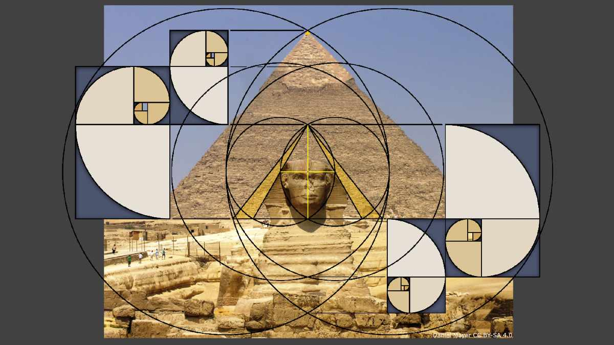

Four numbers have followed the Great Pyramid for centuries. Each is drawn here in gold on a model built in Blender at the surveyed size, then held to the surveys digit by digit, with the error bars showing. Gold digits hold. Red digits don't.
Claimed value against the survey. "Agree" counts the leading significant digits the two share; "Supported" counts how many digits the survey's error bar can carry. A match with more agreeing digits than the survey supports is luck, not design. Computed by verify_numbers.py into claims.json; the scene reads the same file.
| Claim | Claimed | Survey | Off by | Agree | Supported | Grade |
|---|

Which pyramid is that? The pyramid behind the Sphinx with casing stones still near its tip is most likely Khafre's, not Khufu's Great Pyramid (Likely: Khafre's is the one that keeps its upper casing, and from the Sphinx it stands directly behind).
Why overlays always fit. A golden spiral can be scaled and placed freely, and a photograph has perspective, so some fit can almost always be found. The test on this page uses surveyed lengths instead of a photograph.
What the builders wrote down. Egyptian mathematics set a slope by its seked, the run in palms for one cubit of rise (Rhind papyrus, problems 56 to 60). A seked of 5½ gives 14 : 11. That slope makes the perimeter over twice the height equal 22/7 = 3.1429, which is why π appears. φ appears too, because 4/π and √φ differ by only 0.1%.